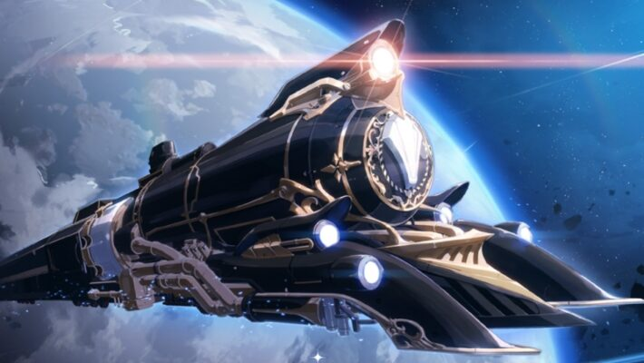

Honkai Star Rail: cómo acceder a la beta cerrada en PC y mobile de lo nuevo de los creadores de Genshin Impact
A partir de hoy, 8 de octubre, los jugadores que tengan ganas de probar lo nuevo de MiHoYo podrán hacerlo a través de una beta abierta, mientras que también tendrán la posibilidad de inscribirse a las pruebas de acceso anticipado en dispositivos PC o iOS (iPhone XR/XS o posterior o iPad con un procesador Apple A12 o posterior).
Las inscripciones se realizan a través de la web de MiHoYo con la ID de usuario: es simple, pero luego será el estudio quien decidirá aleatoriamente quién participa de la beta en cuestión.
Anteriormente, la empresa confirmó que los usuarios seleccionados para disfrutar del acceso anticipado de HSR no tendrán ninguna clase de embargo y podrán compartir contenido en redes con total libertad. Por lo tanto, es más que seguro que a partir de hoy empiecen a publicarse los primeros videos e imágenes del nuevo JRPG.
Luego de establecer un éxito mundial con el gacha de Genshin Impact, MiHoYo se incursionará con Honkai Star Rail, un JRPG que continuará con la saga que tuvo entregas destacadas en el pasado, como Honkai Academy 2 en 2014 y Honkai Impact 3 en 2017, el videojuego que llevó a la fama a MiHoYo y que le sirvió de trampolín para popularizar Genshin Impact en todo el mundo.
Por el momento, Honkai Star Rail se presentó únicamente con una imagen de un tren saliendo de un planeta hacia el espacio exterior. La ilustración vino acompañada de un mensaje: “Que este viaje nos lleve hacia las estrellas”. Tampoco hay una fecha de lanzamiento para la versión final del JRPG, por lo que tendremos que contentarnos con Genshin Impact mientras tanto.

God of War Ragnarok reaparece a lo grande: nuevo tráiler del regreso de Kratos
God of War: Ragnarok será, salvo enorme sorpresa, uno de los juegos que marcarán la historia de PS5. Cuando hablamos de la saga de Santa Monica Studio lo hacemos de una de las franquicias más míticas de la historia y su quinta entrega va a llegar en el mejor momento. ¿Por qué? Porque tras lo que parecía el final de Kratos y su lucha contra los Dioses griegos en PS3, revivió en PS4 con la cuarta entrega de la saga
Leer mas
SSD externos para PlayStation, XBOX y PC: ¿cuál es mejor comprar? Consejos y recomendaciones
Por más avances que realiza la industria del videojuego en materia de hardware, lo que se traduce en un mejor audio, más fotogramas por segundo y una calidad gráfica cada vez más atractiva, el almacenamiento sigue siendo un problema para muchos usuarios.
Leer mas
Todos los dispositivos compatibles con el nuevo PUBG: New State
La compañía ha querido desarrollar un gran juego para móviles y esto hace que ciertos dispositivos no puedan jugarlo. El rendimiento gráfico del nuevo juego es bastante alto, por lo que necesitarás un mínimo de potencia para poder disfrutarlo.
Leer mas
Rainbow Six LEAGUE
La Pro League es una liga profesional de deportes electrónicos para Tom Clancy's Rainbow Six Siege , alojada y organizada por ESL en asociación con Ubisoft Entertainment .
Leer masSiguenos a FullGamingNews